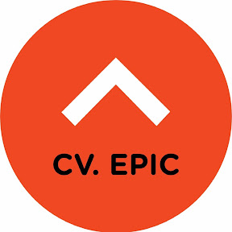

Portal Pemilihan Gudang
Satu kendali untuk dua gudang.
Pilih entitas gudang untuk membuka dashboard operasional. Setiap gudang memiliki database, Google Drive, dan tema visualnya sendiri dengan mesin aplikasi yang sama.

Gudang CV EPIC
EPIC
Operasional gudang CV EPIC dengan aksen Corporate Blue / Navy. Database dan penyimpanan PDF terpisah pada GDrive CV EPIC.
- Putaway inbound & antrean penerimaan
- Picking, dispatch & KPI On-Time Delivery
- Stok real-time, kartu stok & transfer
- Approval Stock Opname khusus Supervisor
Corporate Blue / Navy
Masuk ke Gudang CV EPIC
Gudang PT GEA
GEA
Operasional gudang PT GEA dengan aksen Emerald Green / Forest Green. Database dan penyimpanan PDF terpisah pada GDrive PT GEA.
- Putaway inbound & antrean penerimaan
- Picking, dispatch & KPI On-Time Delivery
- Stok real-time, kartu stok & transfer
- Approval Stock Opname khusus Supervisor
Emerald Green / Forest
Masuk ke Gudang PT GEA
Keamanan PIN
PIN di-hash SHA-256 di browser, sesi token 8 jam, dan pembatasan role STAFF / SUPERVISOR.
Bukti PDF 5 MB
Surat jalan & bukti transfer wajib PDF, disimpan ke GDrive gudang terkait.
Master 12 Jam
Master_Barang di-cache lokal 12 jam: UI tampil instan, data disegarkan di latar belakang.